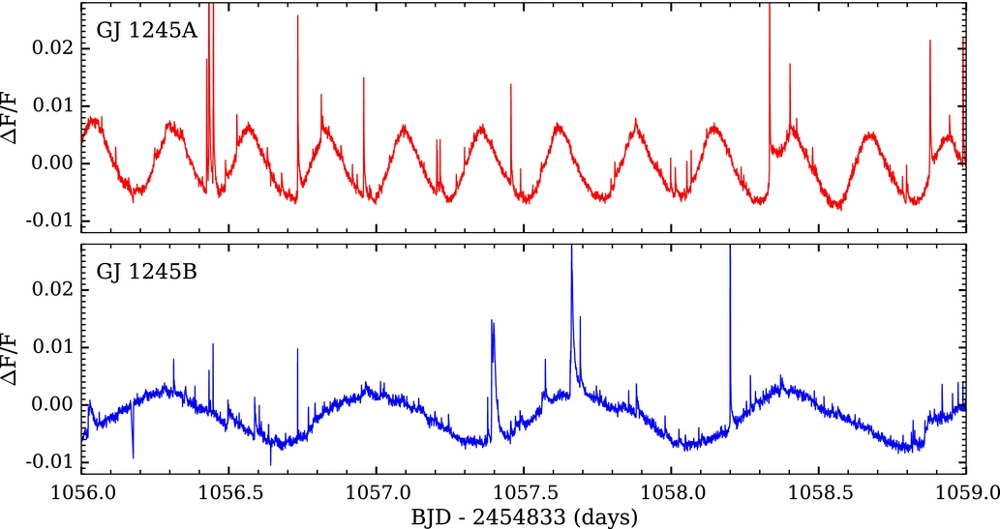

The large majority of stars in the Milky Way Galaxy are smaller, cooler, and less luminous than the Sun. These low mass stars are important in their own right as a major constituent of the Galaxy and as hosts for planets. Many low mass stars have strong magnetic fields that produce flares, rapid releases of matter and energy that could threaten life on an orbiting planet.
This paper studied a system of three nearby, low mass stars known collectively as GJ 1245ABC using publicly available data from the Kepler space telescope. The Kepler mission continuously monitored over 100,000 stars and discovered thousands of planets. A fruitful by-product of the planet search was the brightness measurements of the stars themselves. In addition to flares, magnetic fields also create starspots similar to those on the Sun. These darker regions cause the brightness of a star to vary, and from this astronomers can determine how fast the star rotates, a crucial property that affects the magnetic field.
The figure below shows the brightness measurements for the GJ 1245ABC system in each pixel of the Kepler camera. This is only a small section of what was the largest telescope camera every sent into space. Amazingly, the Kepler camera was so sensitive that the data from a single pixel are comparable in quality to what can be obtained from a decent-sized research telescope at a ground-based observatory! The challenge of the GJ 1245ABC system is that the stars appear very close together on the camera. Blue pixels contain the brightness variation of the more slowly rotating B
star, while red pixels contain the brightness variation of the more rapidly rotating A
star. The purple pixels in between contain signals from both stars. The C
star is much fainter than its companions and doesn't contribute a significant signal. The original analysis by the Kepler mission team only used data from pixels inside the green border, and so missed most of the data for the A star.
For this paper we used a model of the A and B stars to obtain separate brightness measurements for each star, which are shown in the figure below. Notice how the up and down brightness variation of the A star, shown in red in the top panel, is more frequent than the B star because the A star rotates more quickly. The large spikes in brightness are due to flares. From these data we were able to determine that the stars have similar levels of magnetic activity despite the difference in rotation rate, providing an important test case for understanding the low mass stars that dominate our Galaxy.
You can read the full paper, Kepler Flares III: Stellar Activity on GJ 1245A and B, on the Astrophysical Journal website.
This research was done in collaboration with James R. A. Davenport, Suzanne L. Hawley, Tessa D. Wilkinson, John P. Wisniewski, Adam F. Kowalski, and Leslie Hebb. The paper has been cited by 39 peer-reviewed articles as of September 2021.